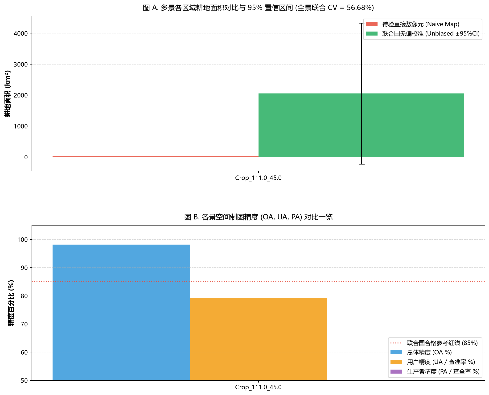

| 区域/瓦片标识 | 空间范围 | 总幅员(km²) | 数像素面积(km²) | 无偏面积(km²) | 无偏面积(万亩) | 偏差率 | 标准误(SE) | 变异系数(CV) | 总体精度(OA) | 查准率(UA) | 查全率(PA) | F1-Score | 官方采信评级 |
|---|---|---|---|---|---|---|---|---|---|---|---|---|---|
| Crop_111.0_45.0 | (111.0, 44.99998627715445, 114.00001372284555, 48.0) | 111529.28 | 31.68 | 2052.34 | 307.85 | -98.46% | ±1163.26 | 56.68% | 98.18% | 79.26% | 1.22% | 0.0241 | ⚠️ 抽样变异较大 (C级-需补样) |
| 【跨区全景联合汇总 Grand Total】 | 涵盖 1 个独立农区瓦片 | 111529.28 | 31.68 | 2052.34 | 307.85 | -98.46% | ±1163.26 | 56.68% | 98.18% | 79.26% | 1.22% | 0.0241 | ⚠️ 抽样变异较大 (C级-需增加样方) |
